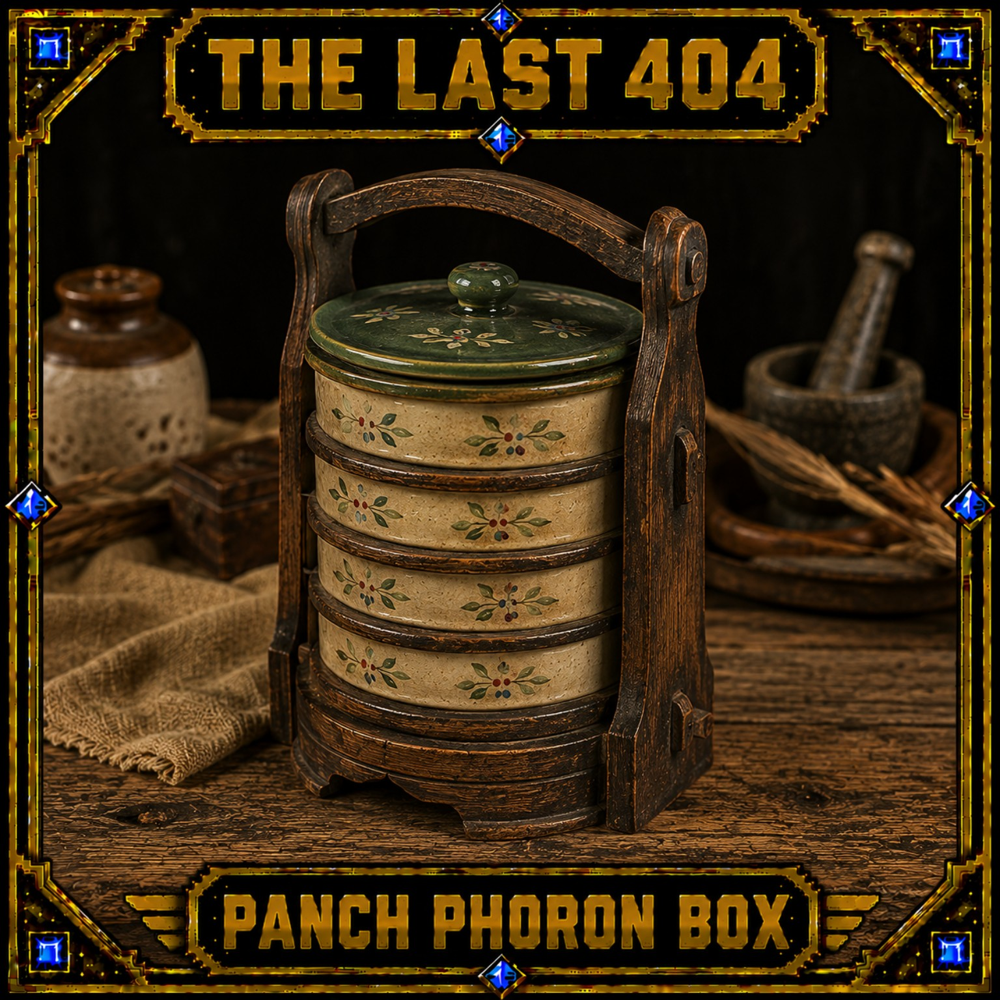

01 / THE STORY
WHEN THE WORLD
MOVED ON.
Every generation leaves something behind. A tool, a machine, a household object, a ritual, a memory.
THE LAST 404 gives those forgotten things a permanent digital archive.
404 means something is missing. Our collection turns that missing feeling into something you can own, collect, and remember.